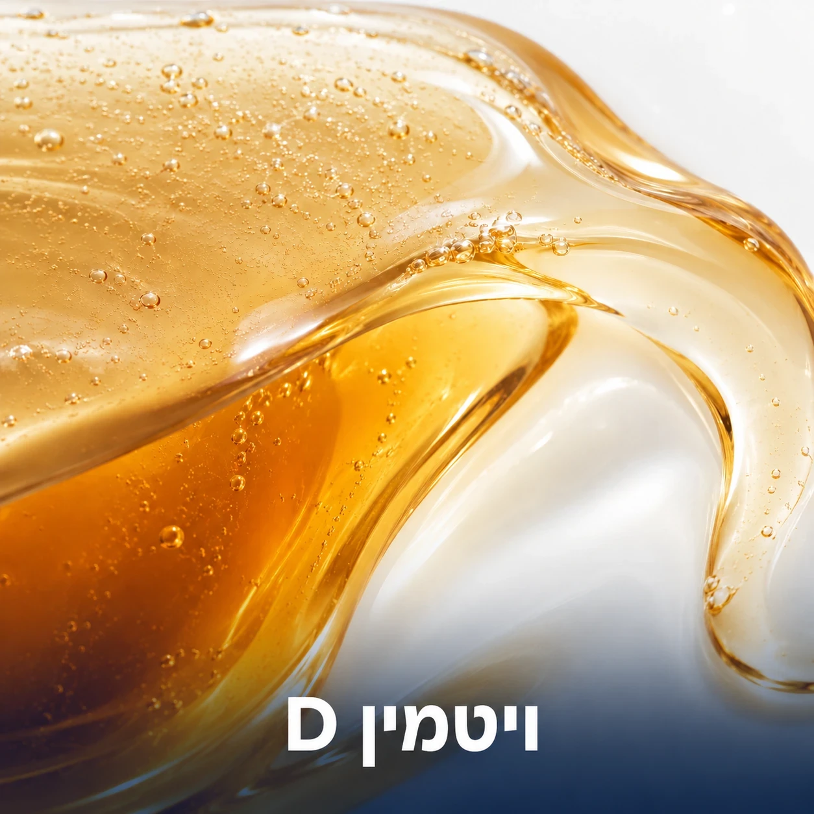
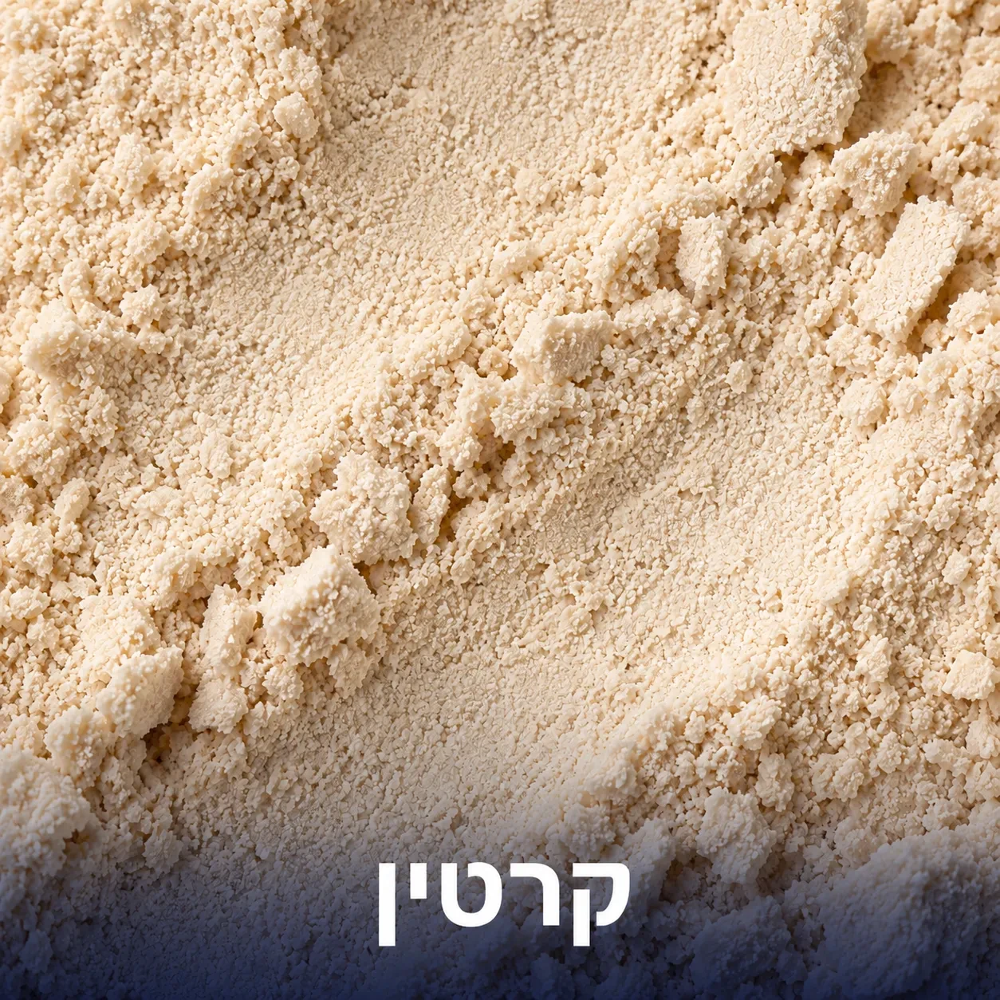
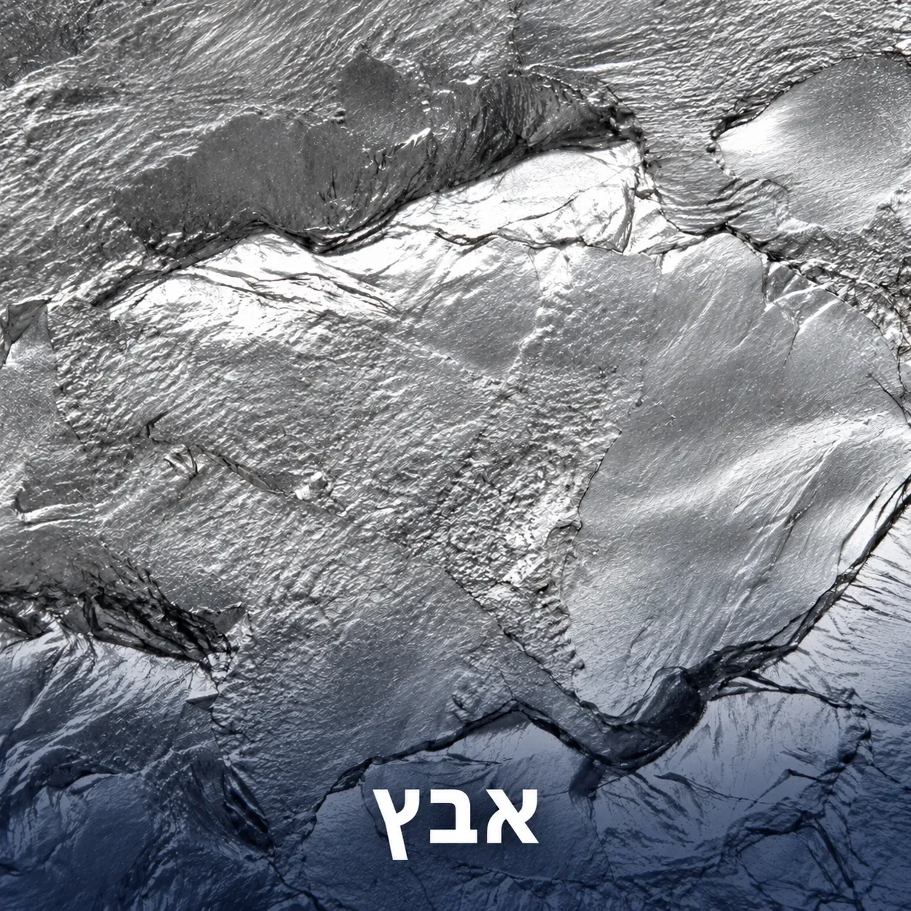
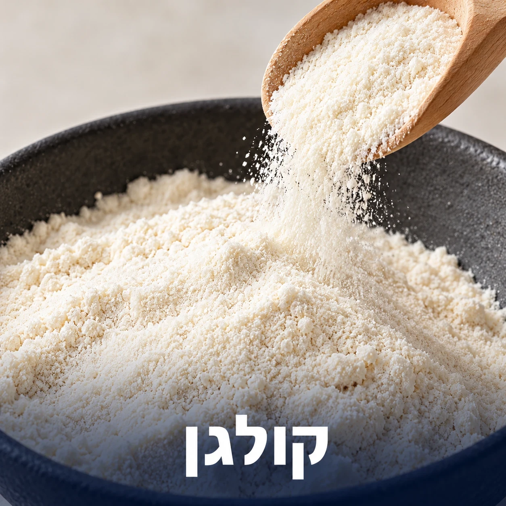

ביוטין הוא ויטמין מקבוצת B (B7) שמשתתף בחילוף החומרים של חלבונים, שומנים ופחמימות. הוא נדרש לפעילות של אנזימים בתאי הגוף, ותורם לשמירה על שיער ועור תקינים.

ויטמין D הוא ויטמין מסיס בשומן שהגוף מייצר בחשיפה לשמש. הוא תומך בתפקוד תקין של מערכת החיסון ובחלוקת תאים, ותורם לשמירה על בריאות העצמות והשרירים. קולטנים לוויטמין D קיימים גם בתאי זקיק השיער, והקשר בין רמתו לבריאות השיער נחקר.

קרטין הוא חלבון מבני שהוא המרכיב העיקרי של השיער, הציפורניים ושכבת העור החיצונית. הוא עשיר בחומצות אמינו, בעיקר ציסטאין, ונחקר בהקשר של תמיכה במראה השיער והציפורניים כחלק מתזונה ואורח חיים מאוזנים.

אבץ הוא מינרל המעורב בהיבטים רבים של חילוף החומרים בתאים, הוא נדרש לפעילות קטליטית של מאות אנזימים והוא ממלא תפקיד בייצור חלבונים, ייצור דנ”א וחלוקת התא, ובריפוי פצעים ושמירה על עור בריא ועל ציפורניים ושיער בריאים.

קולגן הוא חלבון מבני הנמצא באופן טבעי בגוף ותומך בשלמות הרקמות. קולגן מהווה מרכיב חשוב במבנה העור, הציפורניים והשיער, ונחקר בהקשרים של שמירה על מראה שיער תקין כחלק מתזונה ואורח חיים מאוזנים.